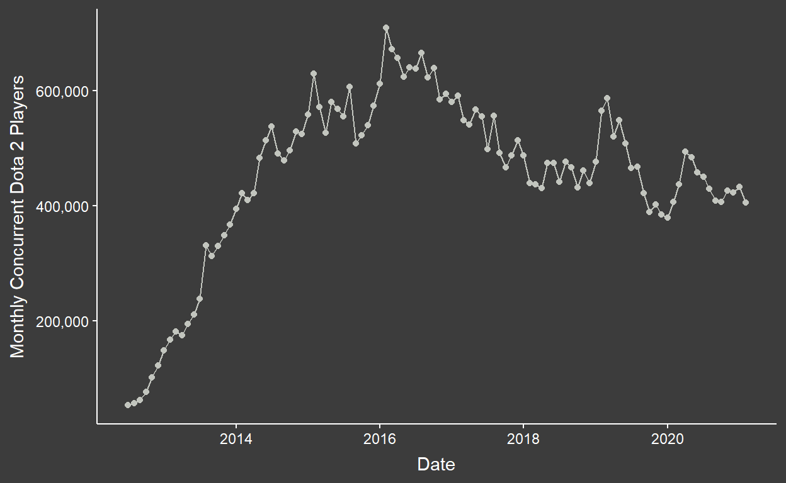
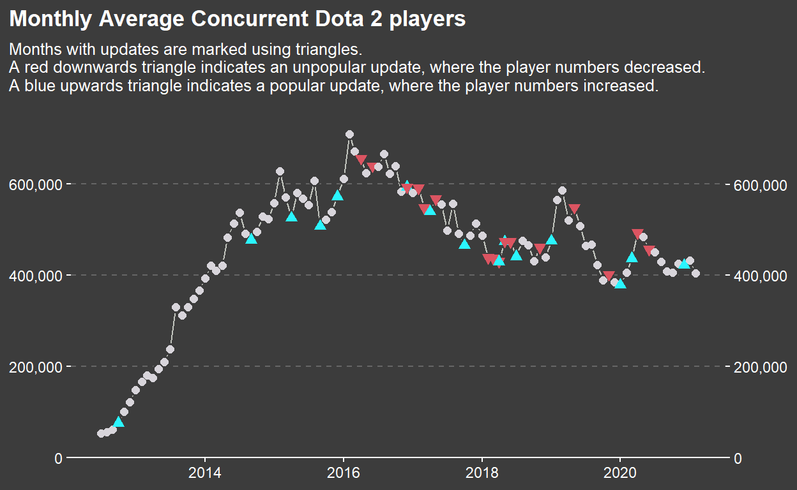
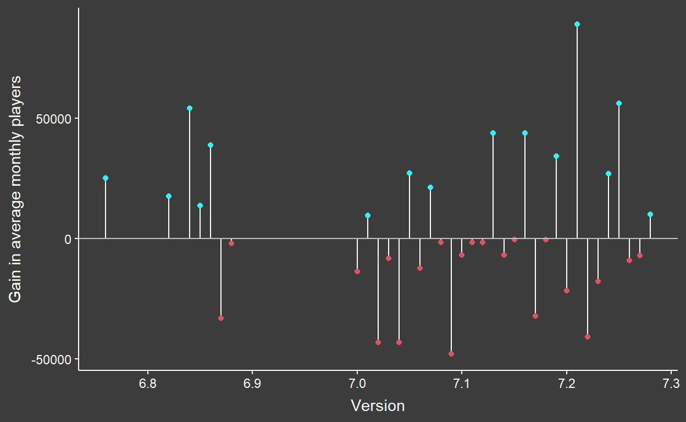

Augmenting a lacking TidyTuesday data set with data from the web.
This week’s #TidyTuesday data set is quite a simple one. Let’s give it a look:
glimpse(games)
Rows: 83,631
Columns: 7
$ gamename <chr> "Counter-Strike: Global Offensive", "Dota 2", ~
$ year <dbl> 2021, 2021, 2021, 2021, 2021, 2021, 2021, 2021~
$ month <chr> "February", "February", "February", "February"~
$ avg <dbl> 741013.24, 404832.13, 198957.52, 120982.64, 11~
$ gain <dbl> -2196.42, -27839.52, -2289.67, 49215.90, -2437~
$ peak <dbl> 1123485, 651615, 447390, 196799, 224276, 13362~
$ avg_peak_perc <chr> "65.9567%", "62.1275%", "44.4707%", "61.4752%"~We can see that there is effectively 4 pieces of information in this data set - the name of the video game, the date (a combination of year and month), and the monthly average and peak number of players. The other two columns could be recalculated from the other columns, but are nice to have.
There is other data that I’d maybe have wanted in an ideal world - the game publisher/designer may be one, game review ratings at every month, the game genre, etc. But we aren’t always in an ideal world and this is what we have got!
Let’s first do some initial cleaning. There are two issues with this data set:
my() function which we’ll use alongside glue::glue().Rows: 83,631
Columns: 6
$ gamename <chr> "Counter-Strike: Global Offensive", "Dota 2", ~
$ yearmon <date> 2021-02-01, 2021-02-01, 2021-02-01, 2021-02-0~
$ avg <dbl> 741013.24, 404832.13, 198957.52, 120982.64, 11~
$ gain <dbl> -2196.42, -27839.52, -2289.67, 49215.90, -2437~
$ peak <dbl> 1123485, 651615, 447390, 196799, 224276, 13362~
$ avg_peak_perc <dbl> 0.659567, 0.621275, 0.444707, 0.614752, 0.5249~Now there are two ways we could go with this - we could look at lots of different games and compare between them, or we could have a deeper look at a single game. There are 1258 games in this data set, but whenever I plot the timeseries I am desperate to aggregate them in some way, and without genre or publisher or the like I keep getting stuck.
Instead, let’s look at a single game - Dota 2. It is updated regularly and I’m familiar-ish with it. I stopped playing after I started university because the games were too long and the community too toxic, but I have a relatively good grasp of what Dota 2 is all about. Let’s plot up the data.

So the average player count seems to peak in 2016 and has been gently decreasing since, with a little burst of activity in 2019-ish. The immediate question I have is - what is prompting the increases and decreases in player count? Updates are a natural possibility, but we don’t have data on that to hand… or do we?
The Dota 2 Gamepedia (wiki) has a wonderful table of all of the major versions of the game. You can see it here. Our problem, however, is that it is a HTML table and not inside of R - yet!
Web scraping is something that I’ve always assumed would be extremely difficult, but it turns out that it couldn’t be simpler with the rvest package. I’ll demonstrate how I pulled that table from the internet and to my R session without having to manually copy it out at all.
First, I’m going to use read_html(), which is imported from the xml2 package. We can see the output of this below.
{html_document}
<html class="client-nojs" lang="en" dir="ltr">
[1] <head>\n<meta http-equiv="Content-Type" content="text/html; cha ...
[2] <body class="mediawiki ltr sitedir-ltr mw-hide-empty-elt ns-0 n ...Now if I’m entirely honest, my ability to read HTML is not the best - I can get by with basic stuff, but actual websites have so much going on it can get pretty complicated. But we don’t actually have to manually scan through this output, we can pull specific pieces out of it using rvest::html_nodes() provided with the argument “table”.
html_nodes(read_html("https://dota2.gamepedia.com/Game_Versions"), "table")
{xml_nodeset (5)}
[1] <table class="wikitable" style="text-align:center" width="75%"> ...
[2] <table><tbody><tr style="vertical-align:top;">\n<td width="120p ...
[3] <table><tbody><tr style="vertical-align:top;">\n<td width="120p ...
[4] <table class="notanavbox" cellspacing="0" style=";"><tbody><tr> ...
[5] <table cellspacing="0" class="nowraplinks hlist mw-collapsible" ...So we’re still at the stage where we’ve got a load of unformatted HTML, but at least we now have a list of tables on this web page. I can only visibly see two things that are recognisable as tables myself, so there’ll be some underlying HTML that is using a table structure for something that’s not really a table.
Anyway, our next step is to use another rvest function, html_table(), to format our table into a usable tibble in R. My plan was to use the robust scientific process of trying each one in turn until I find the correct one, and I was delighted to find it was the first identified table in this list of five.
html_table(html_nodes(read_html("https://dota2.gamepedia.com/Game_Versions"), "table")[1]) %>%
glimpse()
List of 1
$ : tibble [75 x 3] (S3: tbl_df/tbl/data.frame)
..$ Version : chr [1:75] "7.28c" "7.28b" "7.28a" "7.28" ...
..$ Highlights: chr [1:75] "Nerfed" "Nerfed \nBuffed \nRebalanced" "Nerfed \nBuffed" "Added new heroes: HoodwinkNerfed \nBuffed \nReba"| __truncated__ ...
..$ Patch Date: chr [1:75] "2021-02-19" "2021-01-10" "2020-12-22" "2020-12-17" ...My heart swells with pride - we’ve just pulled a HTML table from the internet and got it into R. This isn’t quite the end of the story - there is a second table for updates before version 7.0.0, and we’ll need to do some data tidying/cleaning - but this new challenge is behind me.
Let’s do it “properly” now, in a “proper” workflow.
recent_updates = html_nodes(read_html("https://dota2.gamepedia.com/Game_Versions"),
"table")[1] %>%
html_table() %>%
.[[1]] %>%
janitor::clean_names()
older_updates = html_nodes(read_html("https://dota2.gamepedia.com/Game_Versions/6.70_to_6.88f"),
"table") %>%
html_table() %>%
.[[1]] %>%
janitor::clean_names() %>%
.[-1,] %>%
select(-patch_date_2)
updates = bind_rows(recent_updates, older_updates) %>%
mutate(patch_date = lubridate::ymd(patch_date),
yearmon = lubridate::floor_date(patch_date, unit = "month"))
version_updates = updates %>%
mutate(version = parse_number(version)) %>%
with_groups(version,
~filter(.x, patch_date == min(patch_date))) %>%
distinct(version, yearmon)
I’ll explain what is going on here:
I use the workflow above to read in both tables.
I use janitor::clean_names() to make the column headers easier to use (the function puts them all in snake_case).
In the case of the pre-v7.0.0 updates, Dota 1 and 2 were being updated concurrently, so there’s a second row of headers specifying which game is being talked about. In practice this means that the first line of the table generated by html_table() isn’t really meaningful and can be dropped, and as we’re considering Dota 2 only I can bin the second patch_date column as that refers to Dota 1.
I merge both of these tibbles together using dplyr::bind_rows(), and use the lubridate package once more to ensure that the patch_date column is a datetime and ensure that there is a yearmon column to merge with our existing data.
There are 143 updates in our data set. I reduce this to 36 by only considering “full” updates (e.g. v7.0.5) where typically heroes and items are added or reworked, rather than the alphabetically labelled updates (e.g. v7.0.5a) which are typically limited to balance fixes. I use the experimental dplyr::with_groups() function to achieve this.
We did a lot there! It’s thankfully now easy to merge this with our original Dota 2 data. I’m going to add a new logical column called popular, which is effectively whether the update led to an increase or decrease in player counts.
Rows: 112
Columns: 8
$ gamename <chr> "Dota 2", "Dota 2", "Dota 2", "Dota 2", "Dota ~
$ yearmon <date> 2012-07-01, 2012-08-01, 2012-09-01, 2012-10-0~
$ avg <dbl> 52721.05, 55768.61, 61867.68, 75965.44, 101077~
$ gain <dbl> NA, 3047.56, 6099.07, 14097.77, 25111.99, 2084~
$ peak <dbl> 75041, 108689, 118724, 171860, 169631, 213521,~
$ avg_peak_perc <dbl> 0.702563, 0.513103, 0.521105, 0.442019, 0.5958~
$ version <dbl> NA, NA, NA, 6.76, NA, NA, NA, NA, NA, NA, NA, ~
$ popular <lgl> NA, NA, NA, TRUE, NA, NA, NA, NA, NA, NA, NA, ~I’m going to start by recreating our earlier plot, but this time I’m going to encode our version updates data. I’ll also pretty it up a little!
dota2 %>%
ggplot(aes(x = yearmon, y = avg)) +
geom_line() +
geom_point(aes(shape = popular), fill = "#3c3c3c", color = "#3c3c3c", size = 3) +
geom_point(aes(color = popular, fill = popular, shape = popular), size = 2) +
scale_color_manual(values = c("#DB5461", "#2AF5FF"), na.value = "#D8D5DB") +
scale_fill_manual(values = c("#DB5461", "#2AF5FF"), na.value = "#D8D5DB") +
scale_shape_manual(values = c(25, 24), na.value = 21) +
scale_y_continuous(labels = scales::comma, expand = expansion(mult = c(0,.1)), sec.axis = sec_axis(~., labels = scales::comma)) +
expand_limits(y = 0) +
labs(x = NULL, y = NULL,
title = "Monthly Average Concurrent Dota 2 players",
subtitle = "Months with updates are marked using triangles.\nA red downwards triangle indicates an unpopular update, where the player numbers decreased.\nA blue upwards triangle indicates a popular update, where the player numbers increased.") +
theme(panel.grid.major.y = element_line(linetype = 2, color = "grey40"),
axis.line.y = element_blank(),
legend.position = "none",
plot.title.position = "plot")

So there’s a fair scatter of popular and unpopular updates throughout the history of the game. Initially all of the updates were popular, but we can rationalise that as initial hype as the game grew and people migrated from Dota 1. After that there were a series of unpopular updates until 2017, where the popularity of updates started almost alternating.
Let’s make a more basic plot to illustrate this.
dota2 %>%
mutate(l_gain = lead(gain)) %>%
drop_na(version) %>%
ggplot(aes(x = version, y = l_gain)) +
geom_segment(color = swatch()[1], aes(yend = 0, xend = version)) +
geom_point(aes(color = l_gain > 0)) +
geom_hline(yintercept = 0) +
labs(x = "Version", y = "Gain in average monthly players") +
scale_color_manual(values = c("#DB5461", "#2AF5FF"), na.value = "#D8D5DB") +
theme(legend.position = "none")

I’m now wondering which updates had the biggest effect on the player count? Let’s try pulling out the top, say, five.
# A tibble: 5 x 2
l_gain version
<dbl> <dbl>
1 89163. 7.21
2 56153. 7.25
3 54287. 6.84
4 -48014. 7.09
5 43985. 7.13The Dota 2 wiki unhelpfully has images rather than text in the table to describe the updates. If it did have text, now would be the time to semi_join() this onto our updates data and read what was included in these versions, but I’ll just have to read them myself instead.
v7.21 is an interesting leader because nothing really stands out about it. I found a Reddit thread that suggests v7.20 reworked a load of the heroes and 7.21 rolled back some of the changes.
v7.25 has the usual array of hero updates, but also changed how All Pick (the “default” mode to pick heroes at the beginning of a match) worked.
v6.84 is more what I expected the top 2 to be - a load of reworks and additions to items and heroes. A seemingly pretty big update.
v7.09 confuses me most. Seemingly coinciding the biggest drop in players in this analysis, the only highlights were a buff to the animal courier that carries hero items and a rework to an early game item.
v7.13 again there is little to report.
Hmm.
The main thing I’ve taken from this activity is that web scraping isn’t necessarily as scary as I thought it was, at least for HTML that already exists as a table.
As far as the analysis goes, I did a bit of tidying, cleaning and joining and tried to identify which updates might have caused the biggest changes in player numbers. My initial hypothesis going in was that the most dramatic changes would happen alongside big updates where heroes are added or reworked, but that doesn’t seem to be the case.
I think there are key weaknesses in the way I conducted this very basic analysis:
Unavoidably, player counts aren’t just related to updates. Interest in games wax and wane for lots of reasons, including attitudes to the company and what isn’t being updated as much as what is. It’s tricky to really include this in analysis without a lot of further reading.
To join the data easily without letting updates “bunch up” I rounded the update date down to the nearest month. There is an obvious weakness here in that an update that came on the 25th of January isn’t going to have an effect for the 1-24th. If I wanted to really get more insight out of this I’d have to carefully consider how far through each month each update was.
As the data is monthly, it is hard to really capture the effect of a game update. It is intuitive that player numbers may spike the day or even the week after a big update, and then either settle down if nothing that exciting changed or perhaps stay high/low depending on the opinion of the player-base. We don’t quite see that fine detail in monthly data.
If I wanted to spend more time on this, I think it’d be interesting to do a bit more:
Could you predict the “popularity” of an update (how big/small the gain is) based on features of the update (could just be verbs - “Added”, “Removed”, “Buffed”, “Nerfed”, “Reworked”, etc.) - what kind of update has the biggest effect?
Is there a better way to understand gain vs just month-to-month? Is there a way to smooth it a bit so you get more of the context of each update? e.g. it is possible that some of my “most/least popular” updates were just in the wake of the actual big updates and claimed the glory.
Dota 1 isn’t on Steam, so I doubt the data is out there, but I wonder if when the same or similar updates were being made to both whether they were received the same way by both communities. Someone would have to be quite canny with time series to remove the effect of players migrating from one to the other though.
Regardless, we’ve done a bit of web scraping, and that’s the main thing.
Happy #TidyTuesday!